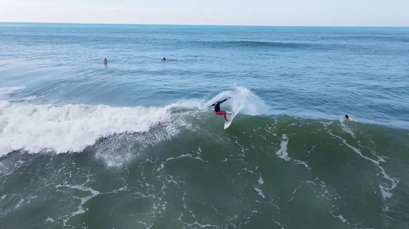
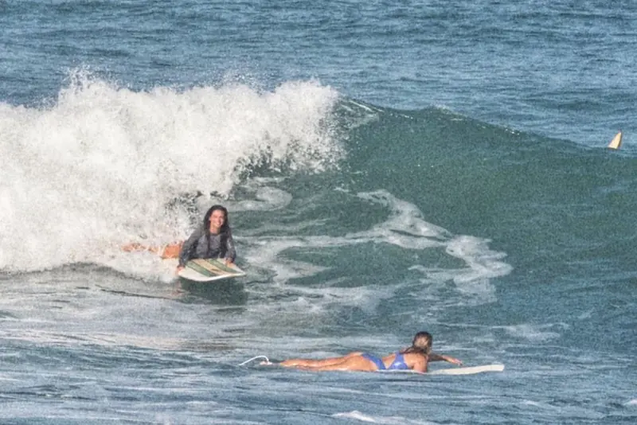
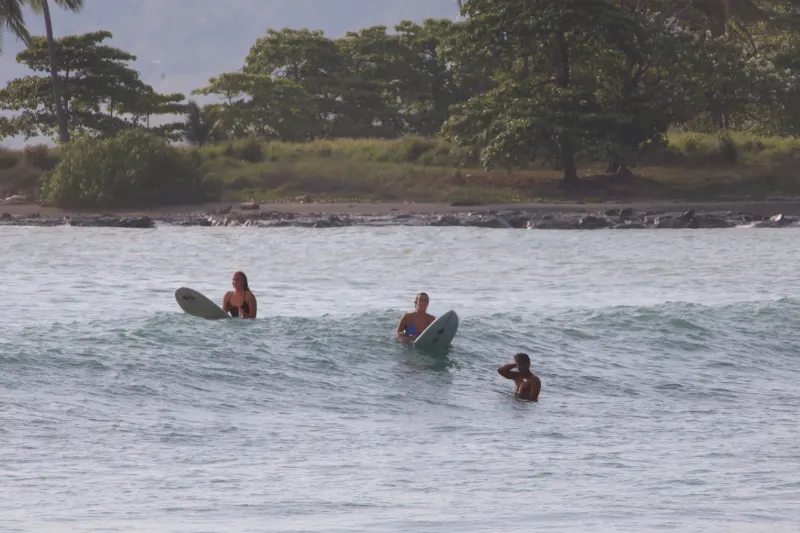
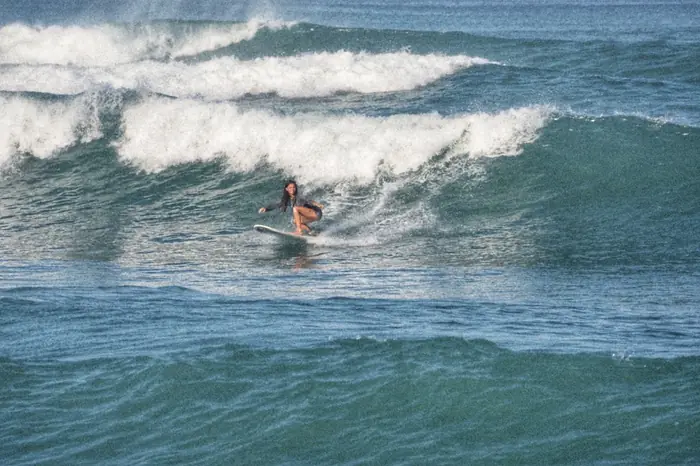
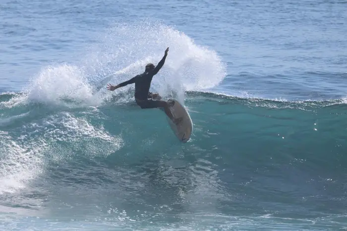
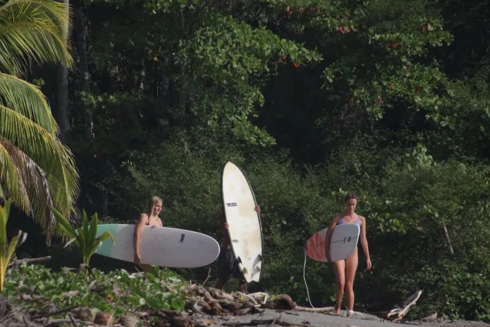

Inicio › Clases para mejorar
Clases de surf en Santa Teresa para mejorar.
Weyser da clases a quienes ya se ponen de pie pero sienten que no avanzan: se caen en la espuma, se les pasan las buenas olas o reman por olas que nunca los llevan. Las clases duran unos 90 minutos, con máximo tres personas, en el lugar que mejor va con la marea y el swell ese día, a menudo Mar Azul o Playa Santa Teresa. Con tres clases todo encaja: el Mini Surf Camp cuesta $200 solo para ti, o $170 por persona para 2 o más.

Llevo 18 años surfeando estas playas y 7 dando clases. Nadie me enseñó, así que sé lo que es estar estancado sin saber por qué. A la mayoría de los surfistas que vienen conmigo no les falta talento. Les faltan una o dos cosas pequeñas: dónde se sientan, cuándo salen a la ola, cómo se paran. Cuando las encontramos, todo se vuelve más fácil.
Dónde se estanca la mayoría, y qué hacemos al respecto
- Tragando espuma toda la mañana. Casi nunca son tus brazos. Es el camino que tomas y el momento. Te enseño a leer las series desde la playa, dónde está el canal y cuándo salir, para que llegues al pico con energía para surfear.
- Viendo pasar todas las buenas olas. Casi siempre es la posición. Trabajamos dónde sentarte en cada pico, cómo ver una ola temprano y cuándo girar y remar, para que estés en el lugar correcto cuando llegue.
- Remando como loco por olas que nunca terminan de llevarte. Se trata de las últimas remadas: dónde va tu peso en la tabla, cuánto remas cuando la ola te levanta y el ángulo con el que entras. Cambios pequeños, gran diferencia.

Tres etapas. Un solo coach.

Ponte de pie.
Pararte, la postura y el equilibrio en la espuma, y después girar la tabla para ir a lo largo de la ola en vez de directo a la playa.
Pasas a la siguiente etapa cuando te paras en la mayoría de las olas y puedes dirigir un poco.

Agarra tus propias olas.
Remar mar adentro, leer las series, posicionarte y entrar en olas verdes, sin romper, por tu cuenta. También trabajamos el trim a la izquierda y a la derecha por la pared de la ola.
Pasas a la siguiente etapa cuando agarras olas verdes por tu cuenta y vas a lo largo de ellas.

Sube de nivel.
Bottom turn, top turn, generar velocidad y surfear días más grandes con confianza. También hablamos de tablas: qué usar a medida que avanzas.
Desde aquí se trata de horas en el agua, con alguien que mira cada ola.
Cada etapa incluye lo que muchos se saltan: corrientes, reglas del agua y dónde no meterse.
Cómo funciona una clase
- Antes
Cuéntame en qué estás trabajando
Mándame un WhatsApp con tu nivel y lo que se te hace difícil. Reviso la marea y el swell y elijo el lugar que mejor te va ese día.
- En la playa
Leemos el mar juntos
Dónde está el pico, por dónde corre la corriente, por dónde remar mar adentro y dónde no meterse. Después, una o dos metas para la clase.
- En el agua, unos 90 minutos
Comentarios en cada ola
Con máximo tres personas, veo cada ola que agarras o que se te pasa, y te digo qué cambiar en la siguiente.
- Después
Qué practicar
Te vas con una o dos cosas para trabajar. El análisis de video ($30) te muestra exactamente lo que vi; las fotos de tu clase tienen un costo adicional.
Por qué funcionan tres clases
En la primera clase encontramos lo que más te frena y empezamos a corregirlo. En la segunda, empieza a volverse un hábito. En la tercera, lo juntas todo en olas distintas, y ahí es cuando encaja. Por eso armé el Mini Surf Camp: tres clases planeadas como una sola, $200 solo para ti, o $170 por persona para 2 o más.
| Para quién | Para quienes ya se ponen de pie y quieren agarrar sus propias olas, girar y surfear días más grandes |
|---|---|
| Grupo | Hasta 3 personas, siempre |
| Dónde | Se elige cada día según la marea y el swell: a menudo Mar Azul, la playa para nivel intermedio, o Playa Santa Teresa |
| La mejor opción | Mini Surf Camp: 3 clases planeadas como una sola, $200 solo para ti, o $170 por persona para 2 o más |
| Una clase | Privada $75 · Grupo o familia $65 por persona · Unos 90 minutos |
| Tu coach | Weyser: 18 años surfeando, 7 años dando clases, más de 800 clases, coach de surf certificado por la ISA, salvavidas certificado, con RCP |
★★★★★
“Nos ayudó muchísimo a mi esposa, a mí y a mis hijos a llevar nuestro surf al siguiente nivel: corrigió nuestros malos hábitos y sumó las habilidades que nos faltaban. Nos ayudó a leer la ola, a posicionarnos, con el take off y el pop up, y después a aprender a hacer trim a la izquierda y a la derecha, y nos enseñó el bottom turn y el top turn.”
¿Qué nivel necesito?
Si te paras en olas de espuma, ya puedes empezar. ¿No sabes bien? Elige “No sé” al reservar y yo te ubico.
¿Cuántas clases necesito para mejorar?
Notas la diferencia desde la primera. Con tres todo encaja de verdad, y justo para eso existe el Mini Surf Camp.
¿Dónde surfean quienes quieren mejorar?
Depende de la marea y del swell. Mar Azul es la playa para nivel intermedio, y Playa Santa Teresa, la playa principal, sirve para todos los niveles según la marea y la hora del día. Elijo el lugar contigo cada día.
¿Y si las olas están muy grandes?
Te lo digo claramente, y busco un lugar donde las olas sean para ti.
¿Puedo tener fotos o video de mi clase?
Sí. Las fotos de tu clase tienen un costo adicional, y el análisis de video cuesta $30, para que veas exactamente qué corregir.

Cuéntame en qué estás trabajando.
Mándame un mensaje con tu nivel y tus fechas. Yo elijo el lugar y la hora.
Compara las playas (en inglés)¿Vienes con alguien que empieza? (en inglés)
Actualizado el 2 de octubre de 2026. Escrito por Weyser: 18 años surfeando en Santa Teresa, 7 años dando clases, más de 800 clases.